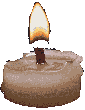

you are stepping into my castle
假作真时真亦假，
无为有处有还无
castle map
botanical entryway
library entryway
boudoir entry
observatory towers
travels
send a letter
the orb
Your browser does not support the audio element.
10.20.24 boudoir diary updated
working on new pages for the future